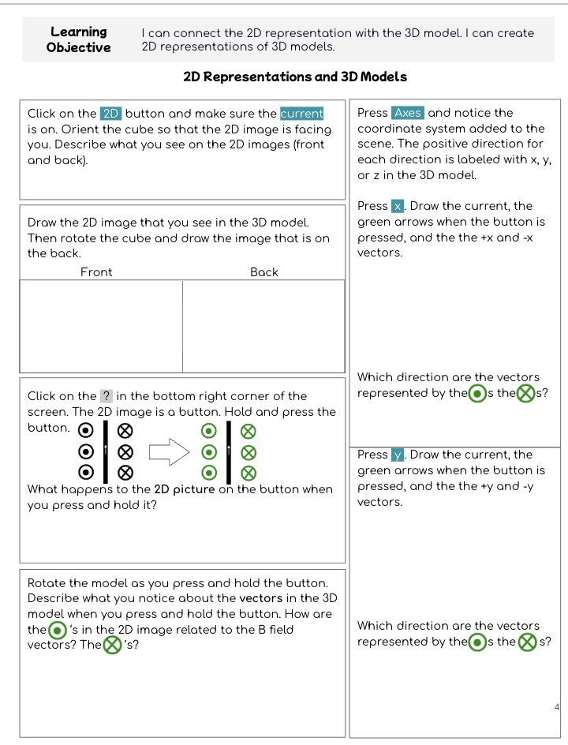

MARVLS Magnetism Lesson Packet
The complete packet includes guided activities for magnetism topics and instructions for using the MARVLS AR for Physics 2 app with a Merge Cube.

Guided exploration of magnetism
The packet is organized around concepts that benefit from spatial visualization and coordinated use of multiple representations.
Magnetic Field of a Magnet
Investigate field direction, field-line structure, and where the magnetic field is strongest.
What Is Current?
Compare electron current and conventional current and connect motion of charge to current direction.
Current-Carrying Wires
Use AR to examine the circular magnetic field surrounding a straight current-carrying wire.
Lorentz Force
Coordinate velocity, field, charge, force, and right-hand-rule relationships in three dimensions.
Biot–Savart
Connect local differential magnetic-field directions with the global field around a wire.
Electromagnetic Induction
Explore changing magnetic flux, induced current, and the direction relationships described by Lenz’s law.
Merge Cube
The AR models use a Merge Cube as the physical target. A printable template is available online.